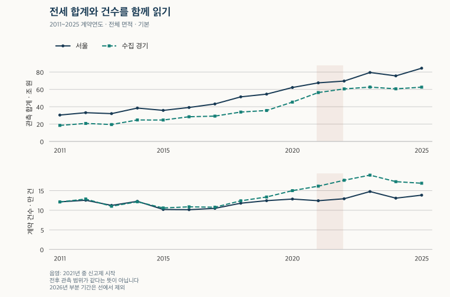
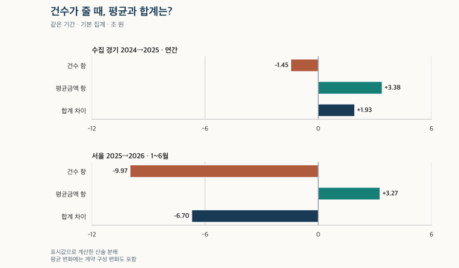

거래량과 시장 읽기 · 전세 보증금 합계
서울 아파트 전세 보증금, 한 해 계약 합계는 얼마일까?
서울·수집 경기의 2011~2025년 전세 보증금 합계와 계약 건수·평균을 비교합니다. 2026년 같은 기간, 신고제 전후, 매매 합계와 면적·기간 충돌 민감도를 살펴보고 계약액과 반환 잔액을 구별합니다.
분석 기간 · 2011~2025년 · 2026년은 같은 6·9개월 | 자료 기준일 · 2026-10-03 · 과거 수집일 미상 포함
서울 아파트의 한 해 전세 보증금을 모두 더하면 얼마일까요? 보유 자료의 2025년 계약 합계는 서울 84.43조 원, 수집 경기 62.57조 원입니다. 다만 이것은 그해 관측한 계약의 보증금을 더한 금액입니다. 모든 전세 주택의 자산가치나 연말에 돌려줘야 할 보증금 잔액과는 다릅니다. 합계·계약 건수·건당 평균금액을 함께 놓고, 이 숫자가 무엇을 말해 주는지 살펴보겠습니다.
계약서의 보증금을 더한 금액입니다
이 글의 연간 합계는 계약일이 해당 연도에 속하는 아파트 전세 계약의 명목 보증금 합계입니다. 자료에 접수된 신고 연도나 실제 돈을 지급한 연도로 묶지 않습니다. 국토교통부 아파트 전월세 자료는 임대차 신고와 확정일자 자료를 바탕으로 합니다. 신고·정정이 뒤늦게 반영될 수 있어, 지금 보유한 과거 연도 수치는 당시 알 수 있었던 수치와도 다릅니다.
범위는 서울 25개 구와 수집 경기 36개 시·구입니다. 경기 전체나 전국 규모로 확대하지 않습니다. 기본 집계는 월세가 0이고 보증금이 양수인 전세 적격 계약으로, 유효한 금액·면적과 기존 정제 기준을 적용했습니다. 같은 계약으로 판별한 중복 원천은 먼저 합치고, 단지 목록에 연결되지 않은 계약도 남겼습니다. 계약 구분·갱신요구권 등의 충돌 때문에 적격성을 확인하지 못한 기록은 제외합니다.
갱신 계약은 늘어난 보증금만이 아니라 계약서의 전체 보증금을 더합니다. 같은 집이 한 해에 여러 번 계약되면 여러 계약 사건이 들어갈 수 있습니다. 예를 들어 보증금이 4억 원에서 4억 2,000만 원으로 오른 갱신 계약은 2,000만 원이 아니라 4억 2,000만 원으로 집계됩니다. 이 예시는 산식 설명을 위한 가상 계약입니다.
따라서 합계는 새로 유입된 현금, 가구의 순자산, 특정 시점의 전세 보증금 잔액이 아닙니다. 전월세 원천에는 매매와 같은 해제 표식과 토지임대부 구분 필드가 없어, 모든 취소나 해당 주택을 실제로 골라냈다고도 할 수 없습니다. 호수 식별자가 없으므로 원천 중복을 합치는 작업만으로 고유 주택별 계약 이력이나 반환 일정을 완성하지 못합니다.
2011~2025년: 합계와 건수의 높낮이를 함께 봅니다
2025년 서울은 138,495건·84.43조 원·건당 평균 6.10억 원, 수집 경기는 168,873건·62.57조 원·평균 3.71억 원입니다. 서울의 합계가 더 크지만 관측 계약은 경기 쪽이 더 많습니다. 합계 하나로 두 지역의 거래 활발함이나 전세 주택 수를 비교하기 어려운 이유입니다.
신고제 도입 이후의 완전한 달력 연도인 2022~2025년을 우선 읽고, 그 이전은 관측 경로가 달랐던 긴 이력으로 봅니다. 아래 그래프와 표에는 2011년부터의 자료를 모두 남겼습니다. 연도를 맞춘다고 신고되지 않은 계약이나 누락 비중까지 같아지는 것은 아닙니다.

| 계약 기간 | 서울 건수 | 서울 합계 조 원 | 서울 평균 억 원 | 경기 건수 | 경기 합계 조 원 | 경기 평균 억 원 |
|---|---|---|---|---|---|---|
| 2011년 연간 | 121,377 | 30.42 | 2.51 | 121,126 | 18.48 | 1.53 |
| 2012년 연간 | 125,516 | 33.14 | 2.64 | 128,645 | 20.75 | 1.61 |
| 2013년 연간 | 112,402 | 32.06 | 2.85 | 110,182 | 19.51 | 1.77 |
| 2014년 연간 | 122,794 | 38.48 | 3.13 | 121,600 | 24.74 | 2.03 |
| 2015년 연간 | 102,012 | 35.80 | 3.51 | 105,877 | 24.67 | 2.33 |
| 2016년 연간 | 101,444 | 39.15 | 3.86 | 108,733 | 28.46 | 2.62 |
| 2017년 연간 | 104,847 | 43.20 | 4.12 | 107,749 | 29.19 | 2.71 |
| 2018년 연간 | 117,960 | 51.40 | 4.36 | 124,051 | 33.89 | 2.73 |
| 2019년 연간 | 124,447 | 54.54 | 4.38 | 133,826 | 35.65 | 2.66 |
| 2020년 연간 | 128,552 | 62.19 | 4.84 | 150,012 | 45.37 | 3.02 |
| 2021년 연간 | 124,318 | 67.55 | 5.43 | 161,414 | 56.35 | 3.49 |
| 2022년 연간 | 129,352 | 69.59 | 5.38 | 176,427 | 60.55 | 3.43 |
| 2023년 연간 | 147,723 | 79.49 | 5.38 | 189,574 | 62.66 | 3.31 |
| 2024년 연간 | 130,855 | 75.58 | 5.78 | 172,906 | 60.64 | 3.51 |
| 2025년 연간 | 138,495 | 84.43 | 6.10 | 168,873 | 62.57 | 3.71 |
합계는 100억 원 단위로 반올림해 조 원 소수 둘째 자리로 표시했습니다. 평균은 이 표시 합계를 건수로 나눈 값입니다. 건수는 기존 공개 월별 전세 건수를 더한 값입니다. 모든 금액은 당시 명목금액이므로 멀리 떨어진 연도의 구매력이 같다고 해석하지 않습니다.
건수가 줄었는데 합계가 늘었다면?
수집 경기의 2024→2025년은 172,906건에서 168,873건으로 줄었지만, 합계는 60.64조 원에서 62.57조 원으로 늘었습니다. 평균금액은 3.51억 원에서 3.71억 원으로 높아졌습니다. 합계 = 건수 × 평균금액이므로 건수와 평균의 방향이 다르면 어느 쪽 변화가 더 큰지 함께 봐야 합니다.
두 해의 합계 차이를 대칭적으로 나누면 ‘건수 변화 × 두 해 평균금액의 평균’과 ‘평균금액 변화 × 두 해 건수의 평균’이 됩니다. 전후 한쪽 해만 기준으로 잡지 않는 산술 분해입니다.
ΔT = (N₁−N₀) × (M₀+M₁)/2 + (M₁−M₀) × (N₀+N₁)/2
T는 합계, N은 건수, M은 평균금액입니다. 0은 앞 기간, 1은 뒤 기간입니다. 표시 합계와 건수로 계산하며, 표에서 소수 둘째 자리로 줄인 평균을 다시 곱하지 않습니다.
| 지역·전후 연도 | 기간 | 건수 차이 | 합계 차이 조 원 | 건수 항 조 원 | 평균금액 항 조 원 |
|---|---|---|---|---|---|
| 수집 경기 2024→2025 | 연간 | -4,033 | +1.93 | -1.45 | +3.38 |
| 서울 2025→2026 | 1~6월 | -16,241 | -6.70 | -9.97 | +3.27 |

평균금액 항에는 같은 주택의 가격 변화뿐 아니라 관측된 지역·면적·연식·신규와 갱신의 구성이 달라진 효과도 섞입니다. 이 분해로 개별 집의 상승률, 금리의 영향 또는 정책 효과를 분리할 수는 없습니다. 먼저 건수를 바꾸고 평균을 바꾸는 순차 계산과 그 반대 순서를 쓰면 각 항의 크기도 달라집니다. 어느 순서든 전체 차이는 같지만, 여기서는 두 순서를 평균한 대칭식을 일관되게 사용했습니다.
모든 같은 기간의 전후 분해 보기
| 지역·전후 연도 | 기간 | 건수 차이 | 합계 차이 조 원 | 건수 항 조 원 | 평균금액 항 조 원 |
|---|---|---|---|---|---|
| 서울 2011→2012 | 연간 | +4,139 | +2.72 | +1.07 | +1.65 |
| 서울 2011→2012 | 1~6월 | -2,085 | +0.46 | -0.52 | +0.98 |
| 서울 2011→2012 | 1~9월 | -1,326 | +0.77 | -0.33 | +1.10 |
| 서울 2012→2013 | 연간 | -13,114 | -1.08 | -3.60 | +2.52 |
| 서울 2012→2013 | 1~6월 | -848 | +0.85 | -0.23 | +1.08 |
| 서울 2012→2013 | 1~9월 | -6,359 | +0.09 | -1.70 | +1.79 |
| 서울 2013→2014 | 연간 | +10,392 | +6.42 | +3.11 | +3.31 |
| 서울 2013→2014 | 1~6월 | -1,300 | +1.36 | -0.38 | +1.74 |
| 서울 2013→2014 | 1~9월 | +4,988 | +3.90 | +1.46 | +2.44 |
| 서울 2014→2015 | 연간 | -20,782 | -2.68 | -6.90 | +4.22 |
| 서울 2014→2015 | 1~6월 | -3,722 | +0.88 | -1.20 | +2.08 |
| 서울 2014→2015 | 1~9월 | -12,695 | -1.01 | -4.11 | +3.10 |
| 서울 2015→2016 | 연간 | -568 | +3.35 | -0.21 | +3.56 |
| 서울 2015→2016 | 1~6월 | -10,042 | -1.85 | -3.57 | +1.72 |
| 서울 2015→2016 | 1~9월 | -5,566 | +0.45 | -1.99 | +2.44 |
| 서울 2016→2017 | 연간 | +3,403 | +4.05 | +1.36 | +2.69 |
| 서울 2016→2017 | 1~6월 | +5,966 | +3.67 | +2.30 | +1.37 |
| 서울 2016→2017 | 1~9월 | +6,714 | +4.75 | +2.61 | +2.14 |
| 서울 2017→2018 | 연간 | +13,113 | +8.20 | +5.56 | +2.64 |
| 서울 2017→2018 | 1~6월 | +3,992 | +3.09 | +1.65 | +1.44 |
| 서울 2017→2018 | 1~9월 | +6,617 | +4.84 | +2.75 | +2.09 |
| 서울 2018→2019 | 연간 | +6,487 | +3.14 | +2.83 | +0.31 |
| 서울 2018→2019 | 1~6월 | +2,494 | +0.98 | +1.06 | -0.08 |
| 서울 2018→2019 | 1~9월 | +1,860 | +0.65 | +0.79 | -0.14 |
| 서울 2019→2020 | 연간 | +4,105 | +7.65 | +1.89 | +5.76 |
| 서울 2019→2020 | 1~6월 | +6,007 | +4.56 | +2.64 | +1.92 |
| 서울 2019→2020 | 1~9월 | +9,967 | +8.12 | +4.44 | +3.68 |
| 서울 2020→2021 | 연간 | -4,234 | +5.36 | -2.17 | +7.53 |
| 서울 2020→2021 | 1~6월 | -4,786 | +2.61 | -2.37 | +4.98 |
| 서울 2020→2021 | 1~9월 | -7,214 | +2.77 | -3.60 | +6.37 |
| 서울 2020→2021 | 1~5월 | -2,681 | +3.20 | -1.31 | +4.51 |
| 서울 2020→2021 | 6~12월 | -1,553 | +2.17 | -0.82 | +2.99 |
| 서울 2021→2022 | 연간 | +5,034 | +2.04 | +2.72 | -0.68 |
| 서울 2021→2022 | 1~6월 | +6,870 | +3.75 | +3.67 | +0.08 |
| 서울 2021→2022 | 1~9월 | +8,359 | +4.66 | +4.46 | +0.20 |
| 서울 2021→2022 | 1~5월 | +6,730 | +3.52 | +3.59 | -0.07 |
| 서울 2021→2022 | 6~12월 | -1,696 | -1.49 | -0.93 | -0.56 |
| 서울 2022→2023 | 연간 | +18,371 | +9.90 | +9.88 | +0.02 |
| 서울 2022→2023 | 1~6월 | +8,669 | +2.79 | +4.53 | -1.74 |
| 서울 2022→2023 | 1~9월 | +11,489 | +4.82 | +6.08 | -1.26 |
| 서울 2023→2024 | 연간 | -16,868 | -3.91 | -9.41 | +5.50 |
| 서울 2023→2024 | 1~6월 | -7,949 | -0.67 | -4.26 | +3.59 |
| 서울 2023→2024 | 1~9월 | -11,637 | -1.94 | -6.33 | +4.39 |
| 서울 2024→2025 | 연간 | +7,640 | +8.85 | +4.54 | +4.31 |
| 서울 2024→2025 | 1~6월 | +4,379 | +4.53 | +2.52 | +2.01 |
| 서울 2024→2025 | 1~9월 | +6,230 | +6.89 | +3.62 | +3.27 |
| 서울 2025→2026 | 1~6월 | -16,241 | -6.70 | -9.97 | +3.27 |
| 서울 2025→2026 | 1~9월 | -27,268 | -12.92 | -16.86 | +3.94 |
| 수집 경기 2011→2012 | 연간 | +7,519 | +2.27 | +1.18 | +1.09 |
| 수집 경기 2011→2012 | 1~6월 | +2,690 | +1.11 | +0.41 | +0.70 |
| 수집 경기 2011→2012 | 1~9월 | +4,806 | +1.61 | +0.74 | +0.87 |
| 수집 경기 2012→2013 | 연간 | -18,463 | -1.24 | -3.12 | +1.88 |
| 수집 경기 2012→2013 | 1~6월 | -6,028 | -0.27 | -0.99 | +0.72 |
| 수집 경기 2012→2013 | 1~9월 | -13,137 | -0.98 | -2.17 | +1.19 |
| 수집 경기 2013→2014 | 연간 | +11,418 | +5.23 | +2.17 | +3.06 |
| 수집 경기 2013→2014 | 1~6월 | +1,514 | +1.99 | +0.28 | +1.71 |
| 수집 경기 2013→2014 | 1~9월 | +7,019 | +3.68 | +1.30 | +2.38 |
| 수집 경기 2014→2015 | 연간 | -15,723 | -0.07 | -3.43 | +3.36 |
| 수집 경기 2014→2015 | 1~6월 | -4,289 | +0.64 | -0.90 | +1.54 |
| 수집 경기 2014→2015 | 1~9월 | -11,026 | +0.03 | -2.34 | +2.37 |
| 수집 경기 2015→2016 | 연간 | +2,856 | +3.79 | +0.71 | +3.08 |
| 수집 경기 2015→2016 | 1~6월 | -4,997 | +0.58 | -1.20 | +1.78 |
| 수집 경기 2015→2016 | 1~9월 | -1,069 | +2.24 | -0.26 | +2.50 |
| 수집 경기 2016→2017 | 연간 | -984 | +0.73 | -0.26 | +0.99 |
| 수집 경기 2016→2017 | 1~6월 | +2,162 | +1.17 | +0.56 | +0.61 |
| 수집 경기 2016→2017 | 1~9월 | +2,608 | +1.49 | +0.68 | +0.81 |
| 수집 경기 2017→2018 | 연간 | +16,302 | +4.70 | +4.43 | +0.27 |
| 수집 경기 2017→2018 | 1~6월 | +5,777 | +1.80 | +1.55 | +0.25 |
| 수집 경기 2017→2018 | 1~9월 | +9,439 | +2.87 | +2.54 | +0.33 |
| 수집 경기 2018→2019 | 연간 | +9,775 | +1.76 | +2.64 | -0.88 |
| 수집 경기 2018→2019 | 1~6월 | +3,027 | -0.18 | +0.80 | -0.98 |
| 수집 경기 2018→2019 | 1~9월 | +4,148 | -0.22 | +1.10 | -1.32 |
| 수집 경기 2019→2020 | 연간 | +16,186 | +9.72 | +4.60 | +5.12 |
| 수집 경기 2019→2020 | 1~6월 | +15,158 | +6.34 | +4.10 | +2.24 |
| 수집 경기 2019→2020 | 1~9월 | +19,660 | +9.16 | +5.41 | +3.75 |
| 수집 경기 2020→2021 | 연간 | +11,402 | +10.98 | +3.71 | +7.27 |
| 수집 경기 2020→2021 | 1~6월 | -3,008 | +2.92 | -0.94 | +3.86 |
| 수집 경기 2020→2021 | 1~9월 | +3,495 | +6.90 | +1.11 | +5.79 |
| 수집 경기 2020→2021 | 1~5월 | -3,069 | +2.25 | -0.95 | +3.20 |
| 수집 경기 2020→2021 | 6~12월 | +14,471 | +8.73 | +4.89 | +3.84 |
| 수집 경기 2021→2022 | 연간 | +15,013 | +4.20 | +5.20 | -1.00 |
| 수집 경기 2021→2022 | 1~6월 | +16,011 | +6.57 | +5.49 | +1.08 |
| 수집 경기 2021→2022 | 1~9월 | +15,462 | +5.93 | +5.33 | +0.60 |
| 수집 경기 2021→2022 | 1~5월 | +15,875 | +6.46 | +5.41 | +1.05 |
| 수집 경기 2021→2022 | 6~12월 | -862 | -2.26 | -0.30 | -1.96 |
| 수집 경기 2022→2023 | 연간 | +13,147 | +2.11 | +4.43 | -2.32 |
| 수집 경기 2022→2023 | 1~6월 | +8,377 | +0.02 | +2.80 | -2.78 |
| 수집 경기 2022→2023 | 1~9월 | +11,036 | +0.36 | +3.70 | -3.34 |
| 수집 경기 2023→2024 | 연간 | -16,668 | -2.02 | -5.68 | +3.66 |
| 수집 경기 2023→2024 | 1~6월 | -8,693 | -0.27 | -2.90 | +2.63 |
| 수집 경기 2023→2024 | 1~9월 | -12,219 | -0.68 | -4.10 | +3.42 |
| 수집 경기 2024→2025 | 연간 | -4,033 | +1.93 | -1.45 | +3.38 |
| 수집 경기 2024→2025 | 1~6월 | -1,598 | +0.45 | -0.56 | +1.01 |
| 수집 경기 2024→2025 | 1~9월 | -3,301 | +0.69 | -1.17 | +1.86 |
| 수집 경기 2025→2026 | 1~6월 | -15,592 | -3.29 | -5.84 | +2.55 |
| 수집 경기 2025→2026 | 1~9월 | -26,313 | -6.55 | -9.90 | +3.35 |
2026년 9개월을 전년 12개월과 비교하지 않습니다
최근 3개월을 덜어낸 1~6월 비교에서 서울 합계는 2025년 42.84조 원에서 2026년 36.14조 원으로 줄었습니다. 건수는 72,762건에서 56,521건으로 감소했고, 평균은 5.89억 원에서 6.39억 원으로 높아졌습니다. 수집 경기 역시 합계는 32.26조 원에서 28.97조 원으로 줄었지만 평균은 3.59억 원에서 3.90억 원으로 올랐습니다.
| 계약 기간 | 서울 건수 | 서울 합계 조 원 | 서울 평균 억 원 | 경기 건수 | 경기 합계 조 원 | 경기 평균 억 원 |
|---|---|---|---|---|---|---|
| 2011년 1~6월 | 65,117 | 15.83 | 2.43 | 63,767 | 9.39 | 1.47 |
| 2012년 1~6월 | 63,032 | 16.29 | 2.58 | 66,457 | 10.50 | 1.58 |
| 2013년 1~6월 | 62,184 | 17.14 | 2.76 | 60,429 | 10.23 | 1.69 |
| 2014년 1~6월 | 60,884 | 18.50 | 3.04 | 61,943 | 12.22 | 1.97 |
| 2015년 1~6월 | 57,162 | 19.38 | 3.39 | 57,654 | 12.86 | 2.23 |
| 2016년 1~6월 | 47,120 | 17.53 | 3.72 | 52,657 | 13.44 | 2.55 |
| 2017년 1~6월 | 53,086 | 21.20 | 3.99 | 54,819 | 14.61 | 2.67 |
| 2018년 1~6월 | 57,078 | 24.29 | 4.26 | 60,596 | 16.41 | 2.71 |
| 2019년 1~6월 | 59,572 | 25.27 | 4.24 | 63,623 | 16.23 | 2.55 |
| 2020년 1~6월 | 65,579 | 29.83 | 4.55 | 78,781 | 22.57 | 2.86 |
| 2021년 1~6월 | 60,793 | 32.44 | 5.34 | 75,773 | 25.49 | 3.36 |
| 2022년 1~6월 | 67,663 | 36.19 | 5.35 | 91,784 | 32.06 | 3.49 |
| 2023년 1~6월 | 76,332 | 38.98 | 5.11 | 100,161 | 32.08 | 3.20 |
| 2024년 1~6월 | 68,383 | 38.31 | 5.60 | 91,468 | 31.81 | 3.48 |
| 2025년 1~6월 | 72,762 | 42.84 | 5.89 | 89,870 | 32.26 | 3.59 |
| 2026년 1~6월 | 56,521 | 36.14 | 6.39 | 74,278 | 28.97 | 3.90 |
1~9월 서울의 표시 합계는 2025년 62.88조 원, 2026년 49.96조 원이며 수집 경기는 46.98조 원, 40.43조 원입니다. 다만 2026년 7~9월은 잠정입니다. 신고·정정 반영이 더 진행될 수 있어, 같은 달력만 맞춘다고 두 해의 관측 완성도가 같아지지는 않습니다. 상반기 값도 현재 보유 자료의 집계이지 앞으로 절대 바뀌지 않는 확정치라는 뜻은 아닙니다.
모든 해의 1~9월 비교 보기 · 2026년은 잠정
| 계약 기간 | 서울 건수 | 서울 합계 조 원 | 서울 평균 억 원 | 경기 건수 | 경기 합계 조 원 | 경기 평균 억 원 |
|---|---|---|---|---|---|---|
| 2011년 1~9월 | 93,953 | 23.12 | 2.46 | 92,957 | 13.90 | 1.50 |
| 2012년 1~9월 | 92,627 | 23.89 | 2.58 | 97,763 | 15.51 | 1.59 |
| 2013년 1~9월 | 86,268 | 23.98 | 2.78 | 84,626 | 14.53 | 1.72 |
| 2014년 1~9월 | 91,256 | 27.88 | 3.06 | 91,645 | 18.21 | 1.99 |
| 2015년 1~9월 | 78,561 | 26.87 | 3.42 | 80,619 | 18.24 | 2.26 |
| 2016년 1~9월 | 72,995 | 27.32 | 3.74 | 79,550 | 20.48 | 2.57 |
| 2017년 1~9월 | 79,709 | 32.07 | 4.02 | 82,158 | 21.97 | 2.67 |
| 2018년 1~9월 | 86,326 | 36.91 | 4.28 | 91,597 | 24.84 | 2.71 |
| 2019년 1~9월 | 88,186 | 37.56 | 4.26 | 95,745 | 24.62 | 2.57 |
| 2020년 1~9월 | 98,153 | 45.68 | 4.65 | 115,405 | 33.78 | 2.93 |
| 2021년 1~9월 | 90,939 | 48.45 | 5.33 | 118,900 | 40.68 | 3.42 |
| 2022년 1~9월 | 99,298 | 53.11 | 5.35 | 134,362 | 46.61 | 3.47 |
| 2023년 1~9월 | 110,787 | 57.93 | 5.23 | 145,398 | 46.97 | 3.23 |
| 2024년 1~9월 | 99,150 | 55.99 | 5.65 | 133,179 | 46.29 | 3.48 |
| 2025년 1~9월 | 105,380 | 62.88 | 5.97 | 129,878 | 46.98 | 3.62 |
| 2026년 1~9월 · 잠정 | 78,112 | 49.96 | 6.40 | 103,565 | 40.43 | 3.90 |
9개월 합계를 12/9배해 확정 연간 규모로 만들지 않았습니다. 계절성과 신고 시차가 있고, 나머지 달의 계약 구성도 아직 알 수 없기 때문입니다.
2021년 6월 전후에는 관측 경로가 달라졌습니다
2021년 도입 당시 공식 안내에 따르면 주택 임대차 신고제는 그해 6월 1일부터 시행됐습니다. 국토교통부 전월세 FAQ도 공개 자료의 범위와 신고·확정일자 자료의 차이를 설명합니다. 이 글은 제도 전후를 동일하게 관측된 전수 계약으로 취급하지 않습니다.
1~5월과 6~12월은 길이와 계절이 다르므로 서로 직접 증감률을 계산하지 않습니다. 대신 2020·2021·2022년의 같은 구간을 나란히 둡니다. 서울의 6~12월 건수는 2020년 74,836건, 2021년 73,283건, 2022년 71,587건입니다. 신고제가 시작됐다고 모든 지역의 이 전세 집계가 곧바로 증가하는 것은 아닙니다. 수집 경기의 같은 구간은 85,073건, 99,544건, 98,682건으로 다른 모습입니다.
| 계약 기간 | 서울 건수 | 서울 합계 조 원 | 서울 평균 억 원 | 경기 건수 | 경기 합계 조 원 | 경기 평균 억 원 |
|---|---|---|---|---|---|---|
| 2020년 1~5월 | 53,716 | 24.03 | 4.47 | 64,939 | 18.39 | 2.83 |
| 2020년 6~12월 | 74,836 | 38.16 | 5.10 | 85,073 | 26.98 | 3.17 |
| 2021년 1~5월 | 51,035 | 27.23 | 5.34 | 61,870 | 20.64 | 3.34 |
| 2021년 6~12월 | 73,283 | 40.33 | 5.50 | 99,544 | 35.71 | 3.59 |
| 2022년 1~5월 | 57,765 | 30.75 | 5.32 | 77,745 | 27.10 | 3.49 |
| 2022년 6~12월 | 71,587 | 38.84 | 5.43 | 98,682 | 33.45 | 3.39 |
기간·지역·정제 규칙을 고정해도 실제 계약 변화, 신고·확정일자 경로, 미관측과 계약 구성은 따로 분리되지 않습니다. 제도 전후 차이를 신고제 때문에 늘어난 계약이나 보증금으로 단정하지 않습니다. 계약 분류·갱신요구권 등 부가 항목의 기재 범위는 2021년 전월세 자료의 신고 경계에서 더 자세히 확인할 수 있습니다.
매매 총액과 비교하면 무엇이 보일까요?
전세와 매매 모두 한 해 계약금액을 더할 수 있지만 계약의 뜻은 다릅니다. 전세는 반환 조건이 있는 보증금이고, 매매는 소유권을 거래하는 계약금액입니다. 아래는 기존 연간 매매 합계와 같은 지역·기간을 맞춘 표입니다. 매매 기본은 관측 해제 제외·직거래 포함이며 전세에는 그 해제 표식이 없습니다.
서울 2025년 전세 84.43조 원과 매매 91.47조 원을 나란히 읽을 수는 있습니다. 그러나 전세÷매매 비율은 집 한 채의 전세가율도, 전세에서 매매로 옮겨 간 자금의 비중도 아닙니다. 두 집계의 집과 계약 건수·구성이 서로 다르기 때문입니다.
기본 매매와 전세의 모든 공통 기간 비교
| 계약 기간 | 서울 매매 건수 | 매매 조 원 | 전세 조 원 | 전세÷매매 | 경기 매매 건수 | 매매 조 원 | 전세 조 원 | 전세÷매매 |
|---|---|---|---|---|---|---|---|---|
| 2011년 연간 | 54,215 | 24.70 | 30.42 | 1.23 | 107,137 | 28.13 | 18.48 | 0.66 |
| 2011년 1~6월 | 29,926 | 13.64 | 15.83 | 1.16 | 58,672 | 15.38 | 9.39 | 0.61 |
| 2011년 1~9월 | 43,016 | 19.47 | 23.12 | 1.19 | 85,678 | 22.39 | 13.90 | 0.62 |
| 2012년 연간 | 40,749 | 18.08 | 33.14 | 1.83 | 77,349 | 19.90 | 20.75 | 1.04 |
| 2012년 1~6월 | 20,112 | 8.86 | 16.29 | 1.84 | 38,032 | 9.65 | 10.50 | 1.09 |
| 2012년 1~9월 | 27,796 | 12.19 | 23.89 | 1.96 | 54,014 | 13.72 | 15.51 | 1.13 |
| 2013년 연간 | 67,760 | 30.02 | 32.06 | 1.07 | 126,174 | 34.01 | 19.51 | 0.57 |
| 2013년 1~6월 | 32,501 | 14.66 | 17.14 | 1.17 | 57,980 | 15.27 | 10.23 | 0.67 |
| 2013년 1~9월 | 48,314 | 21.23 | 23.98 | 1.13 | 90,396 | 24.04 | 14.53 | 0.60 |
| 2014년 연간 | 85,011 | 38.95 | 38.48 | 0.99 | 149,781 | 41.49 | 24.74 | 0.60 |
| 2014년 1~6월 | 39,491 | 17.98 | 18.50 | 1.03 | 70,386 | 19.26 | 12.22 | 0.63 |
| 2014년 1~9월 | 64,633 | 29.65 | 27.88 | 0.94 | 113,458 | 31.27 | 18.21 | 0.58 |
| 2015년 연간 | 119,651 | 57.10 | 35.80 | 0.63 | 174,052 | 51.13 | 24.67 | 0.48 |
| 2015년 1~6월 | 67,520 | 31.35 | 19.38 | 0.62 | 99,585 | 28.68 | 12.86 | 0.45 |
| 2015년 1~9월 | 97,036 | 45.34 | 26.87 | 0.59 | 140,849 | 40.95 | 18.24 | 0.45 |
| 2016년 연간 | 109,764 | 58.98 | 39.15 | 0.66 | 151,422 | 47.73 | 28.46 | 0.60 |
| 2016년 1~6월 | 53,681 | 28.18 | 17.53 | 0.62 | 69,014 | 20.72 | 13.44 | 0.65 |
| 2016년 1~9월 | 87,727 | 46.87 | 27.32 | 0.58 | 115,599 | 35.83 | 20.48 | 0.57 |
| 2017년 연간 | 104,576 | 64.78 | 43.20 | 0.67 | 135,292 | 46.62 | 29.19 | 0.63 |
| 2017년 1~6월 | 54,802 | 32.13 | 21.20 | 0.66 | 68,804 | 22.65 | 14.61 | 0.65 |
| 2017년 1~9월 | 81,640 | 48.75 | 32.07 | 0.66 | 107,285 | 36.24 | 21.97 | 0.61 |
| 2018년 연간 | 81,243 | 53.51 | 51.40 | 0.96 | 134,520 | 49.77 | 33.89 | 0.68 |
| 2018년 1~6월 | 45,474 | 28.61 | 24.29 | 0.85 | 64,489 | 23.84 | 16.41 | 0.69 |
| 2018년 1~9월 | 74,639 | 49.28 | 36.91 | 0.75 | 109,683 | 41.43 | 24.84 | 0.60 |
| 2019년 연간 | 74,554 | 61.29 | 54.54 | 0.89 | 124,043 | 48.66 | 35.65 | 0.73 |
| 2019년 1~6월 | 19,668 | 15.67 | 25.27 | 1.61 | 39,834 | 13.48 | 16.23 | 1.20 |
| 2019년 1~9월 | 42,086 | 34.64 | 37.56 | 1.08 | 69,958 | 25.61 | 24.62 | 0.96 |
| 2020년 연간 | 78,760 | 66.69 | 62.19 | 0.93 | 209,131 | 87.29 | 45.37 | 0.52 |
| 2020년 1~6월 | 42,357 | 32.36 | 29.83 | 0.92 | 114,277 | 43.95 | 22.57 | 0.51 |
| 2020년 1~9월 | 61,180 | 49.31 | 45.68 | 0.93 | 156,643 | 62.80 | 33.78 | 0.54 |
| 2021년 연간 | 약 40,900 | 41.75 | 67.55 | 1.62 | 약 115,000 | 57.70 | 56.35 | 0.98 |
| 2021년 1~6월 | 25,128 | 24.92 | 32.44 | 1.30 | 71,137 | 33.33 | 25.49 | 0.76 |
| 2021년 1~9월 | 36,315 | 36.87 | 48.45 | 1.31 | 102,059 | 50.78 | 40.68 | 0.80 |
| 2022년 연간 | 약 11,300 | 11.11 | 69.59 | 6.26 | 약 35,000 | 17.17 | 60.55 | 3.53 |
| 2022년 1~6월 | 약 7,500 | 7.71 | 36.19 | 4.69 | 약 22,100 | 11.27 | 32.06 | 2.84 |
| 2022년 1~9월 | 약 9,400 | 9.41 | 53.11 | 5.64 | 약 28,100 | 13.99 | 46.61 | 3.33 |
| 2023년 연간 | 약 32,800 | 35.07 | 79.49 | 2.27 | 약 80,800 | 42.32 | 62.66 | 1.48 |
| 2023년 1~6월 | 약 16,600 | 17.31 | 38.98 | 2.25 | 약 42,200 | 22.24 | 32.08 | 1.44 |
| 2023년 1~9월 | 약 27,100 | 29.07 | 57.93 | 1.99 | 약 65,800 | 34.92 | 46.97 | 1.35 |
| 2024년 연간 | 약 53,200 | 64.09 | 75.58 | 1.18 | 약 97,300 | 54.90 | 60.64 | 1.10 |
| 2024년 1~6월 | 약 25,800 | 30.12 | 38.31 | 1.27 | 약 49,100 | 27.14 | 31.81 | 1.17 |
| 2024년 1~9월 | 약 43,500 | 52.12 | 55.99 | 1.07 | 약 79,000 | 44.77 | 46.29 | 1.03 |
| 2025년 연간 | 약 72,100 | 91.47 | 84.43 | 0.92 | 약 115,700 | 72.18 | 62.57 | 0.87 |
| 2025년 1~6월 | 약 40,100 | 52.86 | 42.84 | 0.81 | 약 57,600 | 35.45 | 32.26 | 0.91 |
| 2025년 1~9월 | 약 56,100 | 71.86 | 62.88 | 0.88 | 약 83,300 | 51.75 | 46.98 | 0.91 |
| 2026년 1~6월 | 약 38,400 | 45.77 | 36.14 | 0.79 | 약 77,300 | 49.41 | 28.97 | 0.59 |
| 2026년 1~9월 · 잠정 | 약 49,400 | 58.34 | 49.96 | 0.86 | 약 105,700 | 66.88 | 40.43 | 0.60 |
매매 해제·직거래를 포함하면?
| 계약 기간 | 서울 매매 건수 | 매매 조 원 | 전세 조 원 | 전세÷매매 | 경기 매매 건수 | 매매 조 원 | 전세 조 원 | 전세÷매매 |
|---|---|---|---|---|---|---|---|---|
| 2011년 연간 | 54,215 | 24.70 | 30.42 | 1.23 | 107,137 | 28.13 | 18.48 | 0.66 |
| 2011년 1~6월 | 29,926 | 13.64 | 15.83 | 1.16 | 58,672 | 15.38 | 9.39 | 0.61 |
| 2011년 1~9월 | 43,016 | 19.47 | 23.12 | 1.19 | 85,678 | 22.39 | 13.90 | 0.62 |
| 2012년 연간 | 40,749 | 18.08 | 33.14 | 1.83 | 77,349 | 19.90 | 20.75 | 1.04 |
| 2012년 1~6월 | 20,112 | 8.86 | 16.29 | 1.84 | 38,032 | 9.65 | 10.50 | 1.09 |
| 2012년 1~9월 | 27,796 | 12.19 | 23.89 | 1.96 | 54,014 | 13.72 | 15.51 | 1.13 |
| 2013년 연간 | 67,760 | 30.02 | 32.06 | 1.07 | 126,174 | 34.01 | 19.51 | 0.57 |
| 2013년 1~6월 | 32,501 | 14.66 | 17.14 | 1.17 | 57,980 | 15.27 | 10.23 | 0.67 |
| 2013년 1~9월 | 48,314 | 21.23 | 23.98 | 1.13 | 90,396 | 24.04 | 14.53 | 0.60 |
| 2014년 연간 | 85,011 | 38.95 | 38.48 | 0.99 | 149,781 | 41.49 | 24.74 | 0.60 |
| 2014년 1~6월 | 39,491 | 17.98 | 18.50 | 1.03 | 70,386 | 19.26 | 12.22 | 0.63 |
| 2014년 1~9월 | 64,633 | 29.65 | 27.88 | 0.94 | 113,458 | 31.27 | 18.21 | 0.58 |
| 2015년 연간 | 119,651 | 57.10 | 35.80 | 0.63 | 174,052 | 51.13 | 24.67 | 0.48 |
| 2015년 1~6월 | 67,520 | 31.35 | 19.38 | 0.62 | 99,585 | 28.68 | 12.86 | 0.45 |
| 2015년 1~9월 | 97,036 | 45.34 | 26.87 | 0.59 | 140,849 | 40.95 | 18.24 | 0.45 |
| 2016년 연간 | 109,764 | 58.98 | 39.15 | 0.66 | 151,422 | 47.73 | 28.46 | 0.60 |
| 2016년 1~6월 | 53,681 | 28.18 | 17.53 | 0.62 | 69,014 | 20.72 | 13.44 | 0.65 |
| 2016년 1~9월 | 87,727 | 46.87 | 27.32 | 0.58 | 115,599 | 35.83 | 20.48 | 0.57 |
| 2017년 연간 | 104,576 | 64.78 | 43.20 | 0.67 | 135,292 | 46.62 | 29.19 | 0.63 |
| 2017년 1~6월 | 54,802 | 32.13 | 21.20 | 0.66 | 68,804 | 22.65 | 14.61 | 0.65 |
| 2017년 1~9월 | 81,640 | 48.75 | 32.07 | 0.66 | 107,285 | 36.24 | 21.97 | 0.61 |
| 2018년 연간 | 81,243 | 53.51 | 51.40 | 0.96 | 134,520 | 49.77 | 33.89 | 0.68 |
| 2018년 1~6월 | 45,474 | 28.61 | 24.29 | 0.85 | 64,489 | 23.84 | 16.41 | 0.69 |
| 2018년 1~9월 | 74,639 | 49.28 | 36.91 | 0.75 | 109,683 | 41.43 | 24.84 | 0.60 |
| 2019년 연간 | 74,554 | 61.29 | 54.54 | 0.89 | 124,043 | 48.66 | 35.65 | 0.73 |
| 2019년 1~6월 | 19,668 | 15.67 | 25.27 | 1.61 | 39,834 | 13.48 | 16.23 | 1.20 |
| 2019년 1~9월 | 42,086 | 34.64 | 37.56 | 1.08 | 69,958 | 25.61 | 24.62 | 0.96 |
| 2020년 연간 | 81,837 | 69.37 | 62.19 | 0.90 | 218,863 | 91.17 | 45.37 | 0.50 |
| 2020년 1~6월 | 43,831 | 33.52 | 29.83 | 0.89 | 118,399 | 45.50 | 22.57 | 0.50 |
| 2020년 1~9월 | 63,544 | 51.27 | 45.68 | 0.89 | 163,230 | 65.36 | 33.78 | 0.52 |
| 2021년 연간 | 42,350 | 43.46 | 67.55 | 1.55 | 120,611 | 60.25 | 56.35 | 0.94 |
| 2021년 1~6월 | 25,979 | 25.90 | 32.44 | 1.25 | 74,685 | 34.76 | 25.49 | 0.73 |
| 2021년 1~9월 | 37,543 | 38.29 | 48.45 | 1.27 | 107,023 | 52.97 | 40.68 | 0.77 |
| 2022년 연간 | 12,034 | 11.96 | 69.59 | 5.82 | 36,917 | 18.15 | 60.55 | 3.34 |
| 2022년 1~6월 | 7,986 | 8.32 | 36.19 | 4.35 | 23,235 | 11.87 | 32.06 | 2.70 |
| 2022년 1~9월 | 9,999 | 10.16 | 53.11 | 5.23 | 29,640 | 14.79 | 46.61 | 3.15 |
| 2023년 연간 | 34,333 | 36.78 | 79.49 | 2.16 | 84,304 | 44.13 | 62.66 | 1.42 |
| 2023년 1~6월 | 17,280 | 18.11 | 38.98 | 2.15 | 44,051 | 23.19 | 32.08 | 1.38 |
| 2023년 1~9월 | 28,271 | 30.46 | 57.93 | 1.90 | 68,510 | 36.38 | 46.97 | 1.29 |
| 2024년 연간 | 55,553 | 66.94 | 75.58 | 1.13 | 102,687 | 58.06 | 60.64 | 1.04 |
| 2024년 1~6월 | 26,897 | 31.38 | 38.31 | 1.22 | 51,655 | 28.58 | 31.81 | 1.11 |
| 2024년 1~9월 | 45,265 | 54.26 | 55.99 | 1.03 | 83,197 | 47.19 | 46.29 | 0.98 |
| 2025년 연간 | 77,865 | 99.29 | 84.43 | 0.85 | 124,405 | 78.12 | 62.57 | 0.80 |
| 2025년 1~6월 | 44,001 | 58.23 | 42.84 | 0.74 | 62,815 | 39.12 | 32.26 | 0.82 |
| 2025년 1~9월 | 약 61,200 | 78.74 | 62.88 | 0.80 | 90,354 | 56.59 | 46.98 | 0.83 |
| 2026년 1~6월 | 39,580 | 47.34 | 36.14 | 0.76 | 80,853 | 51.54 | 28.97 | 0.56 |
| 2026년 1~9월 · 잠정 | 50,883 | 60.23 | 49.96 | 0.83 | 110,008 | 69.46 | 40.43 | 0.58 |
관측 매매 해제·직거래를 제외하면?
| 계약 기간 | 서울 매매 건수 | 매매 조 원 | 전세 조 원 | 전세÷매매 | 경기 매매 건수 | 매매 조 원 | 전세 조 원 | 전세÷매매 |
|---|---|---|---|---|---|---|---|---|
| 2011년 연간 | 54,215 | 24.70 | 30.42 | 1.23 | 107,137 | 28.13 | 18.48 | 0.66 |
| 2011년 1~6월 | 29,926 | 13.64 | 15.83 | 1.16 | 58,672 | 15.38 | 9.39 | 0.61 |
| 2011년 1~9월 | 43,016 | 19.47 | 23.12 | 1.19 | 85,678 | 22.39 | 13.90 | 0.62 |
| 2012년 연간 | 40,749 | 18.08 | 33.14 | 1.83 | 77,349 | 19.90 | 20.75 | 1.04 |
| 2012년 1~6월 | 20,112 | 8.86 | 16.29 | 1.84 | 38,032 | 9.65 | 10.50 | 1.09 |
| 2012년 1~9월 | 27,796 | 12.19 | 23.89 | 1.96 | 54,014 | 13.72 | 15.51 | 1.13 |
| 2013년 연간 | 67,760 | 30.02 | 32.06 | 1.07 | 126,174 | 34.01 | 19.51 | 0.57 |
| 2013년 1~6월 | 32,501 | 14.66 | 17.14 | 1.17 | 57,980 | 15.27 | 10.23 | 0.67 |
| 2013년 1~9월 | 48,314 | 21.23 | 23.98 | 1.13 | 90,396 | 24.04 | 14.53 | 0.60 |
| 2014년 연간 | 85,011 | 38.95 | 38.48 | 0.99 | 149,781 | 41.49 | 24.74 | 0.60 |
| 2014년 1~6월 | 39,491 | 17.98 | 18.50 | 1.03 | 70,386 | 19.26 | 12.22 | 0.63 |
| 2014년 1~9월 | 64,633 | 29.65 | 27.88 | 0.94 | 113,458 | 31.27 | 18.21 | 0.58 |
| 2015년 연간 | 119,651 | 57.10 | 35.80 | 0.63 | 174,052 | 51.13 | 24.67 | 0.48 |
| 2015년 1~6월 | 67,520 | 31.35 | 19.38 | 0.62 | 99,585 | 28.68 | 12.86 | 0.45 |
| 2015년 1~9월 | 97,036 | 45.34 | 26.87 | 0.59 | 140,849 | 40.95 | 18.24 | 0.45 |
| 2016년 연간 | 109,764 | 58.98 | 39.15 | 0.66 | 151,422 | 47.73 | 28.46 | 0.60 |
| 2016년 1~6월 | 53,681 | 28.18 | 17.53 | 0.62 | 69,014 | 20.72 | 13.44 | 0.65 |
| 2016년 1~9월 | 87,727 | 46.87 | 27.32 | 0.58 | 115,599 | 35.83 | 20.48 | 0.57 |
| 2017년 연간 | 104,576 | 64.78 | 43.20 | 0.67 | 135,292 | 46.62 | 29.19 | 0.63 |
| 2017년 1~6월 | 54,802 | 32.13 | 21.20 | 0.66 | 68,804 | 22.65 | 14.61 | 0.65 |
| 2017년 1~9월 | 81,640 | 48.75 | 32.07 | 0.66 | 107,285 | 36.24 | 21.97 | 0.61 |
| 2018년 연간 | 81,243 | 53.51 | 51.40 | 0.96 | 134,520 | 49.77 | 33.89 | 0.68 |
| 2018년 1~6월 | 45,474 | 28.61 | 24.29 | 0.85 | 64,489 | 23.84 | 16.41 | 0.69 |
| 2018년 1~9월 | 74,639 | 49.28 | 36.91 | 0.75 | 109,683 | 41.43 | 24.84 | 0.60 |
| 2019년 연간 | 74,554 | 61.29 | 54.54 | 0.89 | 124,043 | 48.66 | 35.65 | 0.73 |
| 2019년 1~6월 | 19,668 | 15.67 | 25.27 | 1.61 | 39,834 | 13.48 | 16.23 | 1.20 |
| 2019년 1~9월 | 42,086 | 34.64 | 37.56 | 1.08 | 69,958 | 25.61 | 24.62 | 0.96 |
| 2020년 연간 | 78,760 | 66.69 | 62.19 | 0.93 | 209,131 | 87.29 | 45.37 | 0.52 |
| 2020년 1~6월 | 42,357 | 32.36 | 29.83 | 0.92 | 114,277 | 43.95 | 22.57 | 0.51 |
| 2020년 1~9월 | 61,180 | 49.31 | 45.68 | 0.93 | 156,643 | 62.80 | 33.78 | 0.54 |
| 2021년 연간 | 40,635 | 41.57 | 67.55 | 1.62 | 114,328 | 57.42 | 56.35 | 0.98 |
| 2021년 1~6월 | 25,128 | 24.92 | 32.44 | 1.30 | 71,137 | 33.33 | 25.49 | 0.76 |
| 2021년 1~9월 | 36,315 | 36.87 | 48.45 | 1.31 | 102,059 | 50.78 | 40.68 | 0.80 |
| 2022년 연간 | 9,675 | 10.14 | 69.59 | 6.86 | 31,681 | 15.78 | 60.55 | 3.84 |
| 2022년 1~6월 | 6,492 | 7.07 | 36.19 | 5.12 | 20,396 | 10.53 | 32.06 | 3.04 |
| 2022년 1~9월 | 8,094 | 8.62 | 53.11 | 6.16 | 25,732 | 12.97 | 46.61 | 3.59 |
| 2023년 연간 | 30,827 | 33.74 | 79.49 | 2.36 | 76,428 | 40.50 | 62.66 | 1.55 |
| 2023년 1~6월 | 15,455 | 16.58 | 38.98 | 2.35 | 39,922 | 21.28 | 32.08 | 1.51 |
| 2023년 1~9월 | 25,516 | 28.02 | 57.93 | 2.07 | 62,337 | 33.50 | 46.97 | 1.40 |
| 2024년 연간 | 51,015 | 62.22 | 75.58 | 1.21 | 92,853 | 53.01 | 60.64 | 1.14 |
| 2024년 1~6월 | 24,897 | 29.41 | 38.31 | 1.30 | 46,893 | 26.23 | 31.81 | 1.21 |
| 2024년 1~9월 | 41,949 | 50.73 | 55.99 | 1.10 | 75,616 | 43.33 | 46.29 | 1.07 |
| 2025년 연간 | 69,280 | 89.16 | 84.43 | 0.95 | 111,135 | 70.11 | 62.57 | 0.89 |
| 2025년 1~6월 | 38,638 | 51.52 | 42.84 | 0.83 | 55,295 | 34.39 | 32.26 | 0.94 |
| 2025년 1~9월 | 53,957 | 70.03 | 62.88 | 0.90 | 79,938 | 50.21 | 46.98 | 0.94 |
| 2026년 1~6월 | 37,004 | 44.62 | 36.14 | 0.81 | 74,398 | 47.98 | 28.97 | 0.60 |
| 2026년 1~9월 · 잠정 | 47,378 | 56.75 | 49.96 | 0.88 | 101,951 | 65.10 | 40.43 | 0.62 |
매매 건수의 ‘약’ 표시는 기존 100건 단위 반올림을 유지합니다. ¹ ‘조건 충족 0·관측 집계 없음’은 해당 매매 설정의 과거 자료에서 적격 관측이 없다는 뜻입니다. 해제·거래유형의 미관측과 제외 기준 영향을 받으므로 실제 시장에 거래가 없었다고 읽지 않으며, 이때 비율도 계산하지 않습니다. 매매의 제외 기준을 전세에 그대로 이식하지 않습니다.
면적을 맞추거나 계약기간 충돌을 빼면?
기본은 모든 면적입니다. 면적 구성이 바뀐 영향을 살펴볼 수 있도록 59형과 84형 합계를 함께 제공합니다. 여기서 59형은 기존 전용면적 분류의 17·18평형 묶음, 84형은 25·26평형 묶음입니다. 정확히 59㎡ 또는 84㎡인 계약만 골랐다는 뜻은 아닙니다. 두 묶음은 전체 면적을 나누는 완전한 분할도 아닙니다. 면적·평형 용어집에서 전용면적 기준을 확인할 수 있습니다.
또 하나의 비교는 원천을 합치는 과정에서 계약기간이 충돌한 기록을 기본 집계에서 제외한 것입니다. 2025년 합계는 서울 83.24조 원, 수집 경기 61.43조 원으로 기본보다 작습니다. 이 설정은 불명확한 기록에 얼마나 민감한지를 보여 줍니다. 실제 고유 주택의 중복을 완벽히 제거한 정답 집계는 아닙니다. 충돌 기록을 빼면 실제 계약까지 빠질 가능성도 남습니다.
전체 면적 · 기간 충돌 제외의 모든 기간 보기
| 계약 기간 | 서울 합계 | 경기 합계 |
|---|---|---|
| 2011년 연간 | 30.42 | 18.47 |
| 2011년 1~6월 | 15.83 | 9.38 |
| 2011년 1~9월 | 23.12 | 13.90 |
| 2012년 연간 | 33.14 | 20.74 |
| 2012년 1~6월 | 16.28 | 10.50 |
| 2012년 1~9월 | 23.88 | 15.50 |
| 2013년 연간 | 32.05 | 19.50 |
| 2013년 1~6월 | 17.14 | 10.23 |
| 2013년 1~9월 | 23.98 | 14.53 |
| 2014년 연간 | 38.48 | 24.73 |
| 2014년 1~6월 | 18.49 | 12.22 |
| 2014년 1~9월 | 27.87 | 18.20 |
| 2015년 연간 | 35.79 | 24.65 |
| 2015년 1~6월 | 19.38 | 12.86 |
| 2015년 1~9월 | 26.86 | 18.23 |
| 2016년 연간 | 39.14 | 28.44 |
| 2016년 1~6월 | 17.52 | 13.43 |
| 2016년 1~9월 | 27.32 | 20.46 |
| 2017년 연간 | 43.19 | 29.16 |
| 2017년 1~6월 | 21.19 | 14.60 |
| 2017년 1~9월 | 32.06 | 21.96 |
| 2018년 연간 | 51.39 | 33.86 |
| 2018년 1~6월 | 24.28 | 16.40 |
| 2018년 1~9월 | 36.90 | 24.82 |
| 2019년 연간 | 54.51 | 35.62 |
| 2019년 1~6월 | 25.26 | 16.22 |
| 2019년 1~9월 | 37.54 | 24.60 |
| 2020년 연간 | 62.17 | 45.33 |
| 2020년 1~6월 | 29.82 | 22.55 |
| 2020년 1~9월 | 45.67 | 33.75 |
| 2020년 1~5월 | 24.02 | 18.37 |
| 2020년 6~12월 | 38.15 | 26.95 |
| 2021년 연간 | 67.19 | 56.04 |
| 2021년 1~6월 | 32.34 | 25.42 |
| 2021년 1~9월 | 48.22 | 40.48 |
| 2021년 1~5월 | 27.20 | 20.62 |
| 2021년 6~12월 | 40.00 | 35.42 |
| 2022년 연간 | 69.18 | 60.08 |
| 2022년 1~6월 | 35.98 | 31.83 |
| 2022년 1~9월 | 52.77 | 46.26 |
| 2022년 1~5월 | 30.60 | 26.90 |
| 2022년 6~12월 | 38.58 | 33.18 |
| 2023년 연간 | 78.97 | 62.15 |
| 2023년 1~6월 | 38.80 | 31.82 |
| 2023년 1~9월 | 57.58 | 46.59 |
| 2024년 연간 | 74.43 | 59.56 |
| 2024년 1~6월 | 37.68 | 31.22 |
| 2024년 1~9월 | 55.10 | 45.46 |
| 2025년 연간 | 83.24 | 61.43 |
| 2025년 1~6월 | 42.21 | 31.65 |
| 2025년 1~9월 | 61.95 | 46.12 |
| 2026년 1~6월 | 35.68 | 28.52 |
| 2026년 1~9월 · 잠정 | 49.40 | 39.87 |
59형 · 기본의 모든 기간 보기
| 계약 기간 | 서울 합계 | 경기 합계 |
|---|---|---|
| 2011년 연간 | 5.09 | 3.10 |
| 2011년 1~6월 | 2.60 | 1.56 |
| 2011년 1~9월 | 3.85 | 2.31 |
| 2012년 연간 | 5.77 | 3.47 |
| 2012년 1~6월 | 2.87 | 1.80 |
| 2012년 1~9월 | 4.32 | 2.63 |
| 2013년 연간 | 5.14 | 3.12 |
| 2013년 1~6월 | 2.83 | 1.66 |
| 2013년 1~9월 | 3.92 | 2.33 |
| 2014년 연간 | 6.19 | 3.97 |
| 2014년 1~6월 | 3.04 | 1.96 |
| 2014년 1~9월 | 4.63 | 2.96 |
| 2015년 연간 | 5.75 | 4.04 |
| 2015년 1~6월 | 3.02 | 2.06 |
| 2015년 1~9월 | 4.27 | 3.00 |
| 2016년 연간 | 6.97 | 5.01 |
| 2016년 1~6월 | 3.08 | 2.26 |
| 2016년 1~9월 | 4.94 | 3.57 |
| 2017년 연간 | 8.08 | 5.25 |
| 2017년 1~6월 | 4.02 | 2.61 |
| 2017년 1~9월 | 6.14 | 4.02 |
| 2018년 연간 | 9.90 | 5.95 |
| 2018년 1~6월 | 4.63 | 2.86 |
| 2018년 1~9월 | 7.15 | 4.36 |
| 2019년 연간 | 11.19 | 6.49 |
| 2019년 1~6월 | 5.24 | 3.06 |
| 2019년 1~9월 | 7.82 | 4.63 |
| 2020년 연간 | 12.91 | 8.60 |
| 2020년 1~6월 | 6.22 | 4.28 |
| 2020년 1~9월 | 9.55 | 6.45 |
| 2020년 1~5월 | 5.08 | 3.49 |
| 2020년 6~12월 | 7.83 | 5.10 |
| 2021년 연간 | 14.22 | 11.02 |
| 2021년 1~6월 | 6.92 | 4.95 |
| 2021년 1~9월 | 10.41 | 8.03 |
| 2021년 1~5월 | 5.78 | 3.98 |
| 2021년 6~12월 | 8.44 | 7.04 |
| 2022년 연간 | 15.45 | 12.53 |
| 2022년 1~6월 | 8.02 | 6.51 |
| 2022년 1~9월 | 11.84 | 9.65 |
| 2022년 1~5월 | 6.79 | 5.48 |
| 2022년 6~12월 | 8.66 | 7.04 |
| 2023년 연간 | 17.28 | 12.37 |
| 2023년 1~6월 | 8.91 | 6.36 |
| 2023년 1~9월 | 12.95 | 9.41 |
| 2024년 연간 | 17.25 | 12.74 |
| 2024년 1~6월 | 8.71 | 6.55 |
| 2024년 1~9월 | 12.90 | 9.75 |
| 2025년 연간 | 19.00 | 12.49 |
| 2025년 1~6월 | 10.13 | 6.60 |
| 2025년 1~9월 | 14.54 | 9.60 |
| 2026년 1~6월 | 8.18 | 5.79 |
| 2026년 1~9월 · 잠정 | 11.48 | 8.22 |
59형 · 기간 충돌 제외의 모든 기간 보기
| 계약 기간 | 서울 합계 | 경기 합계 |
|---|---|---|
| 2011년 연간 | 5.09 | 3.09 |
| 2011년 1~6월 | 2.60 | 1.56 |
| 2011년 1~9월 | 3.85 | 2.31 |
| 2012년 연간 | 5.77 | 3.47 |
| 2012년 1~6월 | 2.87 | 1.80 |
| 2012년 1~9월 | 4.32 | 2.63 |
| 2013년 연간 | 5.14 | 3.12 |
| 2013년 1~6월 | 2.83 | 1.66 |
| 2013년 1~9월 | 3.92 | 2.33 |
| 2014년 연간 | 6.19 | 3.97 |
| 2014년 1~6월 | 3.04 | 1.96 |
| 2014년 1~9월 | 4.62 | 2.96 |
| 2015년 연간 | 5.75 | 4.04 |
| 2015년 1~6월 | 3.02 | 2.06 |
| 2015년 1~9월 | 4.26 | 2.99 |
| 2016년 연간 | 6.97 | 5.01 |
| 2016년 1~6월 | 3.08 | 2.26 |
| 2016년 1~9월 | 4.93 | 3.57 |
| 2017년 연간 | 8.08 | 5.24 |
| 2017년 1~6월 | 4.02 | 2.61 |
| 2017년 1~9월 | 6.14 | 4.02 |
| 2018년 연간 | 9.90 | 5.95 |
| 2018년 1~6월 | 4.63 | 2.86 |
| 2018년 1~9월 | 7.14 | 4.35 |
| 2019년 연간 | 11.18 | 6.48 |
| 2019년 1~6월 | 5.23 | 3.06 |
| 2019년 1~9월 | 7.81 | 4.62 |
| 2020년 연간 | 12.90 | 8.59 |
| 2020년 1~6월 | 6.21 | 4.28 |
| 2020년 1~9월 | 9.55 | 6.44 |
| 2020년 1~5월 | 5.08 | 3.49 |
| 2020년 6~12월 | 7.82 | 5.10 |
| 2021년 연간 | 14.15 | 10.96 |
| 2021년 1~6월 | 6.90 | 4.93 |
| 2021년 1~9월 | 10.36 | 7.99 |
| 2021년 1~5월 | 5.78 | 3.97 |
| 2021년 6~12월 | 8.37 | 6.99 |
| 2022년 연간 | 15.36 | 12.44 |
| 2022년 1~6월 | 7.97 | 6.46 |
| 2022년 1~9월 | 11.78 | 9.58 |
| 2022년 1~5월 | 6.76 | 5.44 |
| 2022년 6~12월 | 8.60 | 6.99 |
| 2023년 연간 | 17.16 | 12.28 |
| 2023년 1~6월 | 8.86 | 6.31 |
| 2023년 1~9월 | 12.86 | 9.34 |
| 2024년 연간 | 16.97 | 12.53 |
| 2024년 1~6월 | 8.55 | 6.45 |
| 2024년 1~9월 | 12.68 | 9.60 |
| 2025년 연간 | 18.75 | 12.24 |
| 2025년 1~6월 | 9.98 | 6.47 |
| 2025년 1~9월 | 14.34 | 9.41 |
| 2026년 1~6월 | 8.09 | 5.70 |
| 2026년 1~9월 · 잠정 | 11.36 | 8.11 |
84형 · 기본의 모든 기간 보기
| 계약 기간 | 서울 합계 | 경기 합계 |
|---|---|---|
| 2011년 연간 | 11.11 | 7.70 |
| 2011년 1~6월 | 5.78 | 3.92 |
| 2011년 1~9월 | 8.41 | 5.79 |
| 2012년 연간 | 12.69 | 8.68 |
| 2012년 1~6월 | 6.14 | 4.39 |
| 2012년 1~9월 | 9.07 | 6.50 |
| 2013년 연간 | 11.87 | 7.92 |
| 2013년 1~6월 | 6.44 | 4.23 |
| 2013년 1~9월 | 8.91 | 5.96 |
| 2014년 연간 | 14.47 | 9.95 |
| 2014년 1~6월 | 6.85 | 4.98 |
| 2014년 1~9월 | 10.46 | 7.36 |
| 2015년 연간 | 12.54 | 9.40 |
| 2015년 1~6월 | 6.87 | 4.99 |
| 2015년 1~9월 | 9.43 | 7.00 |
| 2016년 연간 | 14.19 | 10.83 |
| 2016년 1~6월 | 6.26 | 5.18 |
| 2016년 1~9월 | 9.80 | 7.81 |
| 2017년 연간 | 15.76 | 11.18 |
| 2017년 1~6월 | 7.80 | 5.55 |
| 2017년 1~9월 | 11.70 | 8.37 |
| 2018년 연간 | 19.61 | 13.33 |
| 2018년 1~6월 | 9.05 | 6.47 |
| 2018년 1~9월 | 13.97 | 9.79 |
| 2019년 연간 | 20.71 | 14.22 |
| 2019년 1~6월 | 9.71 | 6.31 |
| 2019년 1~9월 | 14.24 | 9.64 |
| 2020년 연간 | 23.42 | 18.02 |
| 2020년 1~6월 | 11.20 | 9.03 |
| 2020년 1~9월 | 17.22 | 13.42 |
| 2020년 1~5월 | 8.97 | 7.37 |
| 2020년 6~12월 | 14.45 | 10.65 |
| 2021년 연간 | 25.05 | 22.11 |
| 2021년 1~6월 | 12.04 | 9.91 |
| 2021년 1~9월 | 17.92 | 15.86 |
| 2021년 1~5월 | 10.13 | 8.02 |
| 2021년 6~12월 | 14.93 | 14.09 |
| 2022년 연간 | 25.91 | 23.67 |
| 2022년 1~6월 | 13.32 | 12.54 |
| 2022년 1~9월 | 19.56 | 18.18 |
| 2022년 1~5월 | 11.35 | 10.62 |
| 2022년 6~12월 | 14.56 | 13.05 |
| 2023년 연간 | 30.66 | 24.79 |
| 2023년 1~6월 | 15.12 | 12.72 |
| 2023년 1~9월 | 22.29 | 18.49 |
| 2024년 연간 | 28.91 | 23.93 |
| 2024년 1~6월 | 14.45 | 12.59 |
| 2024년 1~9월 | 21.20 | 18.30 |
| 2025년 연간 | 33.22 | 25.12 |
| 2025년 1~6월 | 16.65 | 12.92 |
| 2025년 1~9월 | 24.67 | 18.84 |
| 2026년 1~6월 | 13.67 | 11.72 |
| 2026년 1~9월 · 잠정 | 18.90 | 16.31 |
84형 · 기간 충돌 제외의 모든 기간 보기
| 계약 기간 | 서울 합계 | 경기 합계 |
|---|---|---|
| 2011년 연간 | 11.11 | 7.69 |
| 2011년 1~6월 | 5.78 | 3.92 |
| 2011년 1~9월 | 8.41 | 5.78 |
| 2012년 연간 | 12.69 | 8.68 |
| 2012년 1~6월 | 6.14 | 4.39 |
| 2012년 1~9월 | 9.07 | 6.50 |
| 2013년 연간 | 11.87 | 7.91 |
| 2013년 1~6월 | 6.43 | 4.22 |
| 2013년 1~9월 | 8.91 | 5.96 |
| 2014년 연간 | 14.47 | 9.95 |
| 2014년 1~6월 | 6.85 | 4.97 |
| 2014년 1~9월 | 10.46 | 7.35 |
| 2015년 연간 | 12.54 | 9.39 |
| 2015년 1~6월 | 6.86 | 4.98 |
| 2015년 1~9월 | 9.43 | 7.00 |
| 2016년 연간 | 14.19 | 10.82 |
| 2016년 1~6월 | 6.26 | 5.18 |
| 2016년 1~9월 | 9.80 | 7.81 |
| 2017년 연간 | 15.76 | 11.17 |
| 2017년 1~6월 | 7.80 | 5.55 |
| 2017년 1~9월 | 11.69 | 8.37 |
| 2018년 연간 | 19.61 | 13.32 |
| 2018년 1~6월 | 9.05 | 6.46 |
| 2018년 1~9월 | 13.97 | 9.79 |
| 2019년 연간 | 20.70 | 14.20 |
| 2019년 1~6월 | 9.71 | 6.30 |
| 2019년 1~9월 | 14.23 | 9.63 |
| 2020년 연간 | 23.41 | 18.00 |
| 2020년 1~6월 | 11.20 | 9.02 |
| 2020년 1~9월 | 17.22 | 13.41 |
| 2020년 1~5월 | 8.96 | 7.37 |
| 2020년 6~12월 | 14.45 | 10.64 |
| 2021년 연간 | 24.89 | 21.99 |
| 2021년 1~6월 | 12.00 | 9.89 |
| 2021년 1~9월 | 17.82 | 15.78 |
| 2021년 1~5월 | 10.11 | 8.01 |
| 2021년 6~12월 | 14.78 | 13.98 |
| 2022년 연간 | 25.75 | 23.51 |
| 2022년 1~6월 | 13.25 | 12.47 |
| 2022년 1~9월 | 19.43 | 18.06 |
| 2022년 1~5월 | 11.30 | 10.56 |
| 2022년 6~12월 | 14.45 | 12.95 |
| 2023년 연간 | 30.46 | 24.62 |
| 2023년 1~6월 | 15.04 | 12.64 |
| 2023년 1~9월 | 22.16 | 18.36 |
| 2024년 연간 | 28.52 | 23.55 |
| 2024년 1~6월 | 14.24 | 12.39 |
| 2024년 1~9월 | 20.90 | 18.00 |
| 2025년 연간 | 32.79 | 24.71 |
| 2025년 1~6월 | 16.43 | 12.70 |
| 2025년 1~9월 | 24.33 | 18.52 |
| 2026년 1~6월 | 13.55 | 11.55 |
| 2026년 1~9월 · 잠정 | 18.76 | 16.10 |
이 민감도 표에는 합계만 제시합니다. 건수·평균을 새로 제공하지 않는 칸을 0건으로 읽지 않습니다. 금액은 모두 100억 원 단위 반올림이며, 두 표시값이 같아도 정확한 합계가 같다는 뜻은 아닙니다. 면적을 맞춰도 지역·연식·신규/갱신 구성은 남으므로 동일 주택 가격 비교가 되지는 않습니다.
‘전셋값’이라는 질문이 궁금하다면 평균 계약금액과 광역 합계에 더해 전세 수급지수와 관측 보증금 중위값 비교를 읽어 보세요. 그 글도 거래된 집의 구성과 동일 주택의 가격 지수를 구별합니다.
전세 총액 뉴스를 읽는 네 가지 순서
- 무엇을 더했는지 확인합니다. 계약 전체 보증금인지 증액분인지, 한 해 계약 합계인지 특정 시점 잔액인지 먼저 구별합니다.
- 같은 기간과 지역을 맞춥니다. 9개월과 12개월을 비교하지 않고, 경기 수집 범위를 경기 전체로 바꾸지 않습니다.
- 합계 옆에 건수와 평균을 둡니다. 합계가 커져도 계약이 줄 수 있고 평균이 올라도 합계가 줄 수 있습니다.
- 신고 범위와 계약 구성을 확인합니다. 제도 전후의 관측 차이, 갱신 전체금액, 반복 계약과 누락을 남겨 두고 관심 집의 계약 조건은 별도로 비교합니다.
이 합계는 관측된 전세 계약의 규모를 읽는 자료입니다. 개인이 돌려받을 보증금의 안전성이나 시장 전체의 반환 부담을 계산하는 자료로 대신 쓰지 않습니다. 먼저 내 관심 기간의 행을 찾고, 합계와 건수가 같은 방향인지부터 확인해 보세요.
자료·집계·표시 단위
국토교통부 아파트 전월세 자료의 2011년 1월~2026년 9월 계약분을 사용했습니다. 서울 25개 구·수집 경기 36개 시·구이며, 최신 원천 파일 기준일은 2026년 10월 3일입니다. 과거 수집일이 미상인 원천도 있어 당시 공개돼 있던 자료로 간주하지 않습니다. 공식 자료의 정의와 신고제 도입 안내는 2026년 10월 17일 확인했습니다.
계약 날짜·전세 구분·금액·면적과 기존 중복 정제 규칙의 원천 대조 결과를 재사용하고, 같은 계약 집합의 건수와 정수 만원 합계를 두 방식으로 검산했습니다. 전체 면적의 기본 건수는 이미 공개한 월별 건수의 합입니다. 기간 충돌 제외와 두 표준면적 비교에서는 금액만 제공합니다. 개별 계약 식별자·주소·계약일은 제공하지 않습니다.
합계는 100억 원 단위 반올림이며 평균·비율·분해는 공개한 표시값만 사용합니다. 작은 범주와 특정 계약의 기여가 큰 집계는 공개 조건을 확인했습니다. 기존 공개 표와 함께 금액·중위값·분류 조건을 유한하게 검토했으며, 모든 외부 정보와의 조합이나 개별 계약의 추론 불가능성을 보증하는 검증은 아닙니다.
공개 집계 파일에서 기간·면적·설정별 표시 합계와 기존 매매 비교를 확인할 수 있습니다. 개별 원자료가 아니며, 비어 있는 건수는 0건이 아니라 미공개를 뜻합니다.
분석·집필: 파파펭귄 (Nobot Kang). 에이전트로 원천 확인·독립 검산·편집 검토를 보조했습니다.